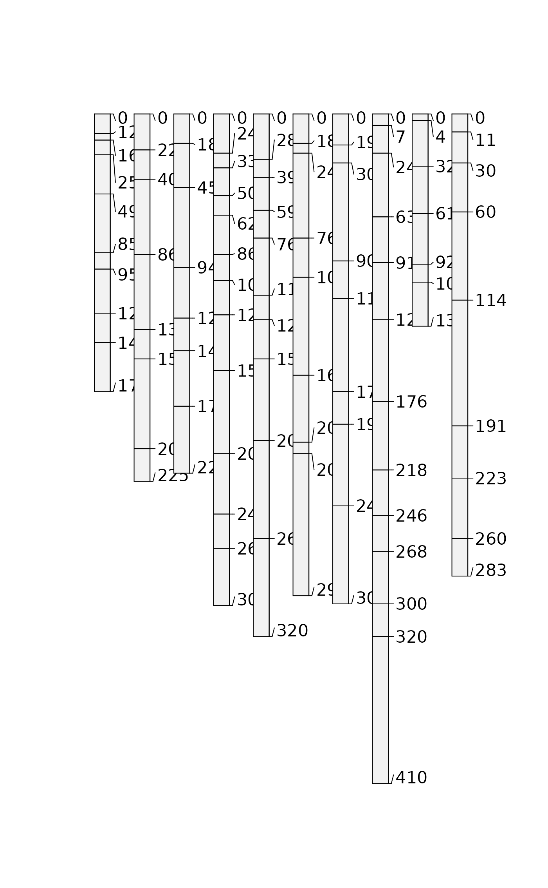

See combine(...) for a connotative short-hand method that does not require that SoilProfileCollection be in a list. Profiles will be sorted based on character sorting of profile ID.
pbindlist(l, new.idname = NULL, verbose = TRUE)a list of SoilProfileCollection objects
Optional: a character referring to a new column name to put unique profile IDs in; default: NULL to attempt with existing idname in first element
Produce warnings and messages regarding results? default: TRUE
a SoilProfileCollection object
Input data must share a common depth unit, and if spatial data are present, a common CRS and coordinate names. In the case of non-conformal @idname and/or @depthcols, the first SoilProfileCollection is used as a template. If one or more subsequent list elements has non-unique values in a site level attribute of that name, the ID name from the second list element is attempted, and so on. Non-conforming spatial data are dropped from the final result (returns default empty SpatialPoints).
# example data
data(sp2, package = 'aqp')
depths(sp2) <- id ~ top + bottom
site(sp2) <- ~ surface
# copy pieces
x <- sp2[1:5, ]
y <- sp2[6:10, ]
# reset IDs and combine
profile_id(y) <- sprintf("%s-copy", profile_id(y))
# this should work
z <- pbindlist(list(x, y))
# check
plot(z)
